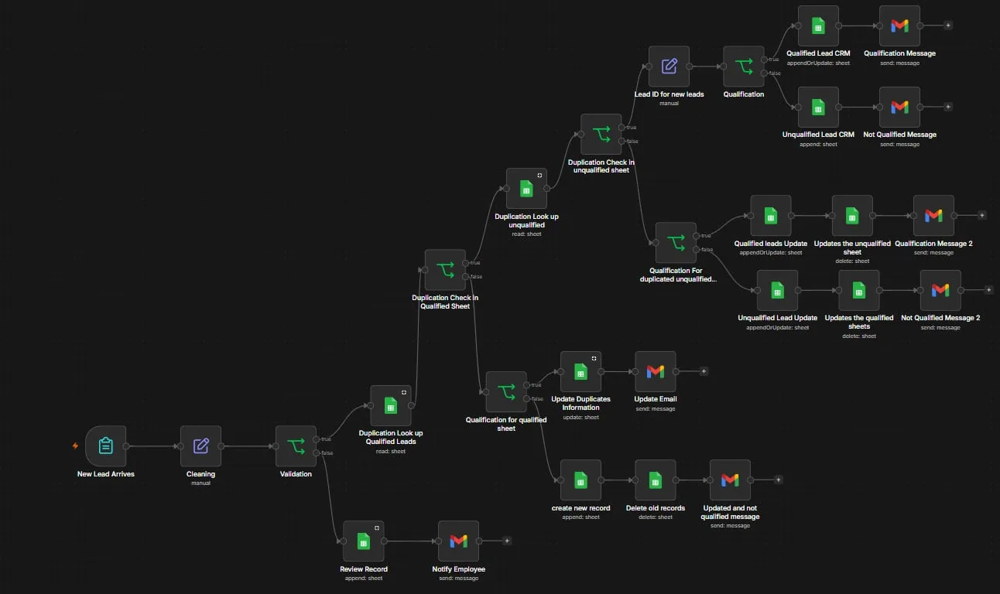

No More Duplicate Leads in Your CRM
Every new lead is tidied up and checked against your lists before it's saved, so the same person doesn't end up in your CRM three times and nobody on your team calls them twice.
Rough estimate. 30 new leads a day at about 2 minutes each to check by hand is around 5 hours a week.
How it works
Problem. A single-field duplicate check let the same person enter the CRM three times under a typo'd email, and when a lead's qualification changed, the stale row stayed behind in the wrong sheet.
Solution. Matches on name, email and phone across both sheets, resolves each hit to a stable Lead ID, updates in place instead of appending, and moves the record between sheets when status changes.
The problem
Single-field duplicate checks let the same person enter the CRM three times under a typo'd email. Qualification changes left stale rows in the wrong sheet.
What it does
- Cleans and validates the submission, routing incomplete records to a manual review queue with an assigned employee.
- Multi-field duplicate detection across both the qualified and unqualified databases.
- Resolves matches against a stable Lead ID, then updates the existing record instead of appending a new one.
- Moves a lead between sheets when its qualification status changes, deleting the stale row.
- Sends the correct Gmail notification for each outcome: accepted, rejected, updated, or needs review.
Deliberate edge case
Conflicting email and phone matches route to a human rather than guessing. Next iteration adds structured logging and error handling.